{kind=link}
{kind=link}
 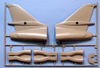
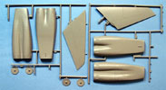
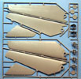
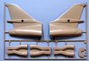
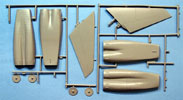
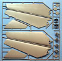
{kind=link}
{kind=link}
{kind=link}
You may click on these small images to view larger pictures
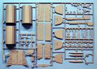 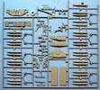 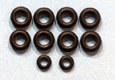 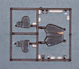
Revell Germany 1/48 B1-B Lancer
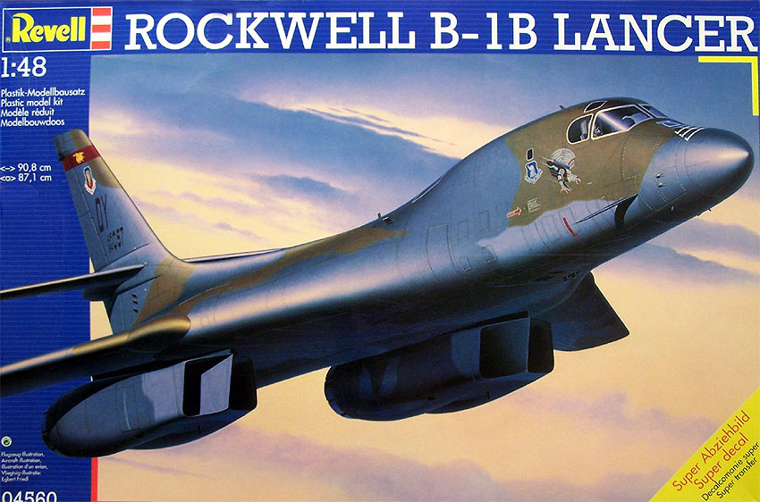
Kit #4560
MSRP $93.75
Images and text Copyright © 2006 by Matt Swan
Developmental Background
The Rockwell B1-B Lancer forms one component of three that are the US Heavy Bomber Force. The B1 program was put in place by President Ronald Reagan in 1981 but the story has roots that go much further back than that. It all began in 1965 with the Advanced Manned Strategic Aircraft (AMSA) program. After years of development a contract was awarded to Rockwell International to develop the prototype aircraft in 1970. The B1 was intended to be an interim type of aircraft while more stealthy technology was being developed that resulted in the B-2. Even as such it had an impressive bomb load, range and supersonic speed not equaled by later stealth aircraft.
Several interesting pieces of technology were incorporated into the B1 such as a blended wing body and Variable-Geometry wings like that seen with the F-111 and F-14 aircraft. Another idea that was first used with the F-111 was an ejectable crew pod that was used on the initial B1-B but did not remain with the program. Production aircraft feature conventional ejection seats. The first B1-B was delivered to the Air Force in 1985 and reached an operational capability by 1986. Production had now geared up to the point where four of these massive aircraft were rolling off the assembly line each month and a total of 100 aircraft were produced. By the turn of the century 93 of these were still in service but by 2003 aircraft were being retired, mostly due to budgetary concerns.
The official designation of the aircraft is ‘Lancer’ but crews refer to it as the ‘Bone’ which comes from the numerical designation, B-one. Development continues on the aircraft with a B1-R version already proposed that would incorporate the engines being used on the new F-22 Raptor giving the bomber a Mach 2.2 capability. Additional electronics are being included such as network-centric capabilities, air-to-air engagement and active electronically-scanned array radar.
The Kit
This kit is just so big and huge, the box it arrives in is considerably larger than that found with the Monogram B-17 or B-29. Even with the larger box the fuselage had to be broken down into three primary sections to fit. The model was initially cast with four primary parts sprues but these have been cut apart at the factory for packaging in several smaller poly bags. I don’t know if this was done to facilitate packaging or if there were problems with consistent plastic injection over such a large sheet but regardless we have lots of parts here to deal with. The larger items like the fuselage sections and wings have very large injection ports which will present some slight challenge when removing the parts so as to not cause damage. Normally I will use sprue cutters to remove parts but for these I found it was safer to use a razor saw then shave the excess plastic with a razor knife. Any attempts to remove these large parts from the injector ports with sprue cutters will most likely damage the part as well. These larger pieces also displayed some medium levels of flash; all other parts were free of flash. During the dry fit the only serious issue I discovered was the radar nose cone was oversized and created a noticeable step to the primary fuselage.
All exterior pieces for this kit have nice, crisp consistent engraved panel lines and smooth surface texture. There is some slight warpage to these large parts which is very difficult to avoid. I found the worse case to be the tail section pieces but with some medium pressure and a few strips of masking tape was able to be pulled together. Test fitting the larger pieces showed that all panel lines matched up well and only a small amount of filler would be needed to hide the seams. Internally we have a good level of detail in the cockpit but with the smoked canopy little will probably be visible when complete. The bomb bay and wheel bays are adequately detailed with a full complement of ordinance. Engine intakes are only fair on the detail level and the burner cans rate about the same. Landing gear is adequately detailed and the wings are postionable.
Clear parts are provided on a single small sprue of smoked clear plastic and tires are provided as vinyl parts. Overall this kit contains two hundred fifty one gray high pressure injection molded pieces with nine smoked transparent pieces and 10 vinyl tires for a total of two hundred seventy parts in the box and you will use all of these. Oddly for a kit of this size the total parts count seems low to me.
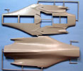
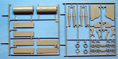
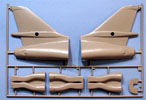
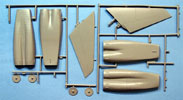
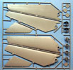
You may click on these small images to view larger pictures
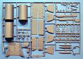
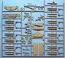
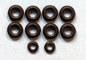
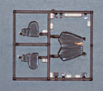
Decals and Instructions
Kit instructions are delivered as an A-4 sized booklet that opens with an historical background of the aircraft in both English and German. The next four pages are simple safety warnings in a multitude of languages. This is followed by a fairly comprehensive paint code chart that lists paints by color name and includes mixing ratios for the uncommon colors. Page seven contains a complete parts map and by time we get to page eight we are actually dealing with construction steps.
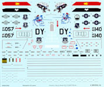
The next ten pages cover eighty seven exploded view construction steps that include color call-outs and some construction tips. The last two pages contain exterior painting guide and decal placement instructions.
Revell has done a nice job on the decals for this kit, the sheet is large and comprehensive. It includes markings for two aircraft as well as plenty of service and warning stencils. Wing walk markings are provided along with some very colorful nose art. The decals are very crisp and sharp with good color density and print registry. The set included with this review kit are from the 2000 printing and cover the “Last Lancer” and a unit from the 96th Bomber Wing, Dyess AFB 1993.
Conclusions
In size alone this is an impressive kit and the modeler should seriously consider exactly where they would display the finished kit before starting construction because this baby will take up some space. The overall parts quality is good with a good level of detail. The oversized nose cone will present some issue and the slight warpage of the larger parts will require special attention during construction. Instructions are very comprehensive and will get the modeler through the build with little difficulty, decals are very good and complete.
While this kit has been on the market for a few years now there are only a few aftermarket items available. Eduard has done two photo etched sets for this and one of them is aimed at making the engines more acceptable. Fox One did a set of decals that is popular with modelers. Daco Publications issued a good booklet on the Bone that could be useful as a reference source. Overall this is a good model that should go together well; the only real challenge here is to find display space for the finished product. I give it a good recommendation.


{kind=link}
{kind=link}
{kind=link}
{kind=link}
{kind=link}